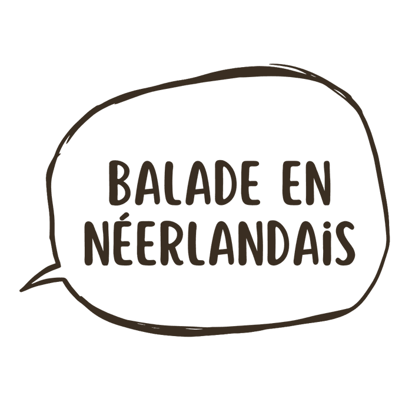
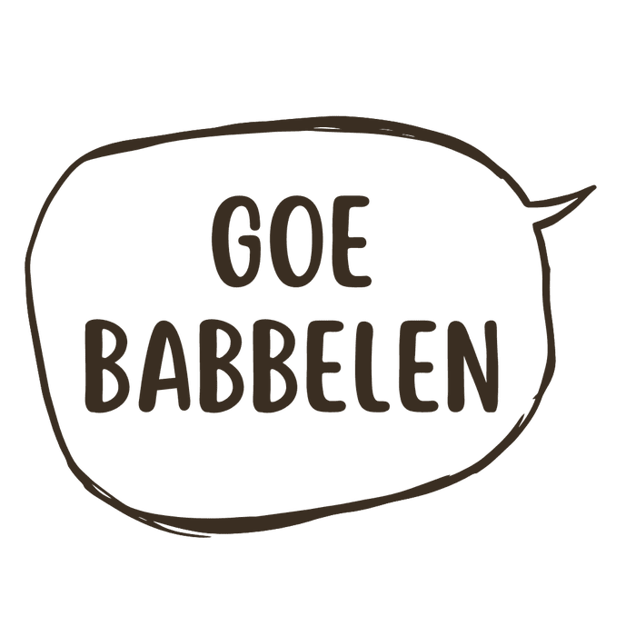
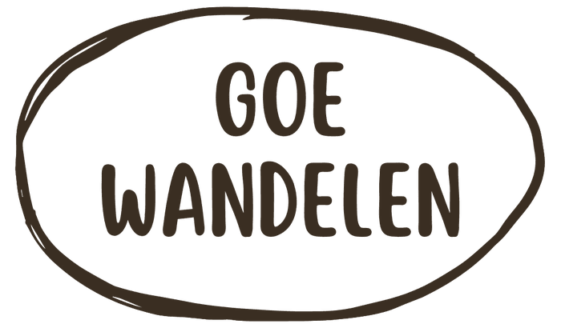
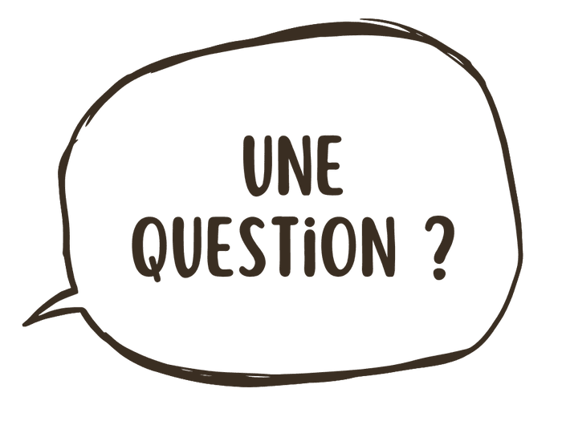

Das Goe — Balades en néerlandais
Ose (enfin) parler néerlandais
Sans stress, en pleine nature.
Tu comprends le néerlandais, mais au moment de répondre, ton cerveau se fige ?
C'est totalement normal. Les cours traditionnels stimulent la zone de la peur dans ton cerveau. Le stress bloque ta fluidité. Tu as peur d'être jugé, tu cherches tes mots, et tu abandonnes.
Pour libérer ta parole, il faut sortir de la classe.
Balades en néerlandais
Oublie l'angoisse des listes de vocabulaire. Bienvenue chez DAS GOE : la méthode de la marche active.
En tant que coach en gestion du stress (formée à la cohérence cardiaque et à la respiration anti-hyperventilation), je le constate à chaque balade : bouger en plein air fait retomber la pression et libère la parole. Dans la magnifique nature de Viroinval, tu vas pratiquer la langue de manière totalement naturelle :
- Zéro table, zéro chaise, zéro examen
Une discussion fluide au rythme de tes pas.
- Un cadre 100% sécurisant
Pas de jugements, nous sommes tous là pour progresser.
- Des déclencheurs spontanés
La nature nous offre les sujets, je guide tes échanges en douceur.
Goe babbelen

Balade en néerlandais
On marche, on déconnecte, on papote. La nature évacue le stress, les mots viennent tout seuls. Tu apprends sans même t'en rendre compte.
35€ / balade
Je réserve ma randoGoe wandelen

Infos pratiques & prochaine session
Maximum 6 participants pour garantir ton espace de parole bienveillant.
Garantie « Zéro Risque »
Si après 1 heure de marche, tu sens que tu n'es pas à l'aise ou que cette formule ne te convient pas, dis-le-moi. Je te rembourse l'inscription immédiatement. Sur place. Sans poser de questions. Ton bien-être passe avant tout.
Ce qu'ils en disent
« J'ose enfin parler néerlandais »
« Très chouette soirée organisée par Erika. Un moment de convivialité pour discuter en néerlandais autour du feu en toute bienveillance et avec zéro jugement. »
Michaël Rousseau — recommande
« Un accueil chaleureux, une activité où le respect de chacun est primordial, chacun vient comme il est et découvre ou approfondit son lien avec la nature, avec les autres et avec lui-même. Une très belle expérience. »
Inès Pesneau — recommande
★★★★★
« Erika hielp mij bij het studeren voor mijn examens. Ze had een leuke manier van leren studeren waardoor ik meer interesse had in mijn cursus en bood ook veel structuur aan. Ze had verschillende visuele trucjes, dit maakte het voor mij makkelijker om bepaalde zaken te onthouden. Dankzij haar werd mijn buisvak een impressionant cijfer op mijn rapport. »
Amber
Une question ?

Je comprends un peu le néerlandais, mais je n'ose pas du tout parler. Est-ce que cette balade est vraiment pour moi ?
C'est exactement pour toi ! La grande majorité des participants sont dans ta situation : ils ont le « dictionnaire bloqué dans la tête » par peur du jugement. Ici, pas de prof sévère, pas de notes. On marche, on fait des erreurs, on en rigole et on avance ensemble.
Quel est le niveau minimum requis pour participer ?
Si tu comprends des phrases simples comme « Hoe gaat het? » (Comment ça va ?) ou « Het is mooi weer » (Il fait beau), tu as largement le niveau ! Même si tes bases scolaires sont très lointaines, tu es le bienvenu(e).
Que se passe-t-il si je ne trouve plus mes mots pendant la balade ?
Rien de grave ! On parle avec les mains, les pieds, et s'il le faut, on utilise un mot en français. Je suis là pour t'aider et te souffler le mot manquant, sans aucune pression. La nature autour de nous offre une multitude de sujets concrets pour que la conversation reste naturelle et fluide.
Et s'il pleut ? La balade est-elle annulée ?
« Er bestaat geen slecht weer, alleen slechte kleren » (Il n'y a pas de mauvais temps, juste de mauvais vêtements) ! Sauf tempête extrême, la balade est maintenue. Prends une bonne veste imperméable, de bonnes chaussures, et c'est parti !
Comment fonctionne la garantie « Zéro Risque » ?
C'est basé sur la confiance : si après 1 heure, tu ne te sens pas à l'aise, tu me le dis discrètement. Je te rembourse l'inscription sur-le-champ. Ton bien-être passe avant tout.
Pourquoi y a-t-il un maximum de 6 participants ?
Pour deux raisons très simples : pour que la balade reste intime, conviviale, et que tu te sentes en totale sécurité — et pour garantir que chacun ait un vrai temps de parole de qualité, avec un accompagnement individuel et chaleureux.
Tu n'es pas dans la région de Viroinval, ou tu préfères démarrer depuis chez toi ?
J'donne aussi des cours en ligne individuels, même philosophie, en visio.